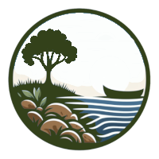

As terras de Iria
Lendas de Rois
A fonte de San Vicenzo
No interior da igrexa parroquial de Augasantas, concello de Rois (A Coruña), hai unha fonte con auga salutífera para persoas e animais. Con esta auga medran e quedan libres de pragas os froitos se se asperxe cunha póla de oliveira que logo hai que chantar na terra, protexe as construccións que se bendicen con ela, afasta o mal e tempera os perigos que poden quedar nunha casa onde houbese unha morte.
A mellor auga é a que se colle o día de San Xoán e tamén a dos meses de abril e maio; cando se usa sempre hai que dicir: entre Xesús en Xerusalén, saia o mal e entre o ben.
A fonte descubriuse unha vez que pasaba un cego co seu burro. O animal bebeu na fonte e logo espurrou nos ollos do cego que sandou ao instante. Tamén se conta ao revés, e quen recupera a vista é o burro. E aínda se conta que o burro estaba doente e que ao beber a auga recuperou a saúde.